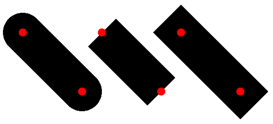

除了它的颜色、宽度和样式之外,一支笔还可以有一个 pen stipple 位图。 用硬笔画画类似于调用 draw-bitmap ,硬笔画的区域内有硬笔位图。
'solid —
用笔的颜色作画。 如果一个(单色的) pen stipple 被安装到钢笔中,钢笔画中的黑色像素会用画笔的颜色转移到目的地, 而钢笔画中的白色像素则不会被转移。 - 以下的特殊笔模式使用笔的颜色,它们只适用于不使用 pen stipple 的情况:
为了避免创建具有相同特征的多个笔,请使用全局的 pen-list% 对象 the-pen-list, 或者在 set-pen in dc<%> 提供颜色、宽度和样式。
当在 'unsmoothed 或 'aligned 模式下绘图时, 笔的尺寸在缩放到与绘图环境的 alignment scale 相乘后被截断。 尺寸为 0 的笔(截断后,如果适用的话)在目标绘图环境中使用非零的、对比例不敏感的线条尺寸: 对于 'smoothed 中的 post-script-dc% 或 pdf-dc% 上下文,使用 1/4 单位(缩放后),或者对于任何其他上下文,使用 1 单位(缩放后)除以 alignment scale 。 例如,在 alignment scale 为 1.0 的未缩放画布和位图上下文中, 零宽度的笔的行为与尺寸为 1 的笔相同。
参见 make-pen 。
constructor
(new pen% [ [color color] [width width] [style style] [cap cap] [join join] [stipple stipple]]) → (is-a?/c pen%) color : (or/c string? (is-a?/c color%)) = "black" width : (real-in 0 255) = 0 style : pen-style/c = 'solid cap : pen-cap-style/c = 'round join : pen-join-style/c = 'round stipple : (or/c #f (is-a?/c bitmap%)) = #f
method
(send a-pen get-cap) → pen-cap-style/c
这段代码画了三条对角线,每条都有可能的盖子('round, 'butt, 然后是 'projecting),并在线的终点处放一个小红点。
> (define (plot-line dc x1 y1 x2 y2 cap) (send dc set-pen (send the-pen-list find-or-create-pen "black" 40 'solid cap)) (send dc draw-line x1 y1 x2 y2) (send dc set-brush "red" 'solid) (send dc set-pen "black" 1 'transparent) (send dc draw-ellipse (- x1 4) (- y1 4) 8 8) (send dc draw-ellipse (- x2 4) (- y2 4) 8 8))
> (dc (λ (dc dx dy) (define old-pen (send dc get-pen)) (define old-brush (send dc get-brush)) (plot-line dc 20 30 80 90 'round) (plot-line dc 100 30 160 90 'butt) (plot-line dc 180 30 240 90 'projecting) (send dc set-pen old-pen) (send dc set-brush old-brush)) 270 120) 
method
(send a-pen get-join) → pen-join-style/c
这段代码显示了三种连接方式 ('round, 'bevel 和 'miter) , 通过绘制一连串的线条,首先是一个尖角,然后是一个直角。 每条线的端点都有一个红点。
> (define points '((100 . 100) (0 . 0) (0 . 100) (40 . 100)))
> (define (connect-points dc dx dy join) (send dc set-pen (send the-pen-list find-or-create-pen "black" 40 'solid 'round join)) (send dc draw-lines points dx dy) (send dc set-brush "red" 'solid) (send dc set-pen "black" 1 'transparent) (for ([pt (in-list points)]) (send dc draw-ellipse (+ dx (car pt) -4) (+ dy (cdr pt) -4) 8 8)))
> (dc (λ (dc dx dy) (define old-pen (send dc get-pen)) (define old-brush (send dc get-brush)) (connect-points dc 20 50 'round) (connect-points dc 180 50 'bevel) (connect-points dc 340 50 'miter) (send dc set-pen old-pen) (send dc set-brush old-brush)) 460 170)

method
(send a-pen get-stipple) → (or/c (is-a?/c bitmap%) #f)
method
(send a-pen get-style) → pen-style/c
method
(send a-pen is-immutable?) → boolean?
method
cap-style : pen-cap-style/c
如果一个笔是从一个 pen-list% 中获得的,或者当它被选入一个绘图上下文时,就不能被修改。
method
color : (is-a?/c color%) (send a-pen set-color color-name) → void? color-name : string? (send a-pen set-color red green blue) → void? red : byte? green : byte? blue : byte?
如果一个钢笔是从一个 pen-list% 中获得的,或者当它被选择到一个绘图环境中的时候,就不能被修改。
method
join-style : pen-join-style/c
如果一個筆是從一個 pen-list% 中取得的,或當它被選擇到一個繪圖上下文中時,就不能被修改。
如果 bitmap 在与笔相关联时被修改,对笔的影响是不明确的。 如果一个笔是从一个 pen-list% 中获得的,或者当它被选入一个绘图上下文时,就不能被修改。
method
style : pen-style/c
如果一个钢笔是从 pen-list% 中获得的,或者当它被选入一个绘图环境中时,它就不能被修改。